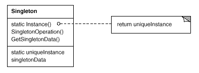

|
|||||||||||
| PREV NEXT | FRAMES NO FRAMES | ||||||||||
| Packages that use com.niufish.pattern.singleton | |
| com.niufish.pattern.singleton | 单例(Singleton)模式  意图:保证一个类仅有一个实例，并提供一个访问它的全局访问点。 |
| Classes in com.niufish.pattern.singleton used by com.niufish.pattern.singleton | |
| RegSingleton
可继承单例，但是子类不能够使线程安全 View Source |
|
| RegSingletonChild
可继承单例的子类 View Source |
|
| Singleton
线程安全的单例 View Source |
|
|
|||||||||||
| PREV NEXT | FRAMES NO FRAMES | ||||||||||